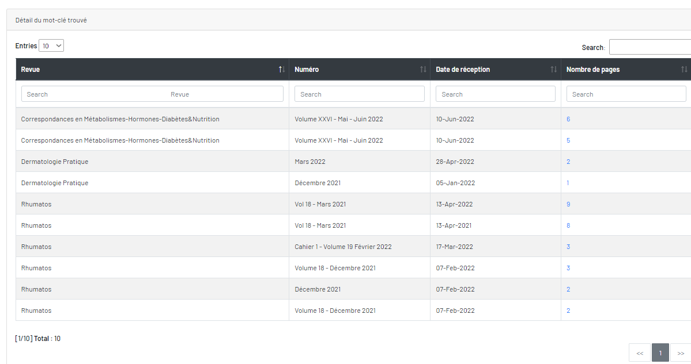

Détail d'un mot-clé trouvé
La page s'affiche une tableau, Vous trouvez des revue, ses numéros, ses date de réception et nombre pages qui contient ce mot-clé.

Cliquez sur le chiffre de nombre de pages, vous trouvez que les pages de la numéro qui contient ce mot-clé.